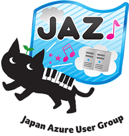

GoAzure は、マイクロソフト と Microsoft Azure ユーザーコミュニティ (Japan Azure User Group、通称JAZUG) との共催による、Azure コミュニティイベント です。このイベントに合わせて、「Azure Friday」のオンラインセミナーでもお馴染み、マイクロソフト米国本社の Scott Hanselman が初来日！Keynote に登壇します。また、マイクロソフト社員やJAZUG メンバーの他、スペシャルゲストも参戦！Azure をまだあまりご存じのない方向けから Deepなテクノロジー情報まで、実際にAzureを利用されているユーザーの目線からセレクトした多彩なブレイクアウトセッションを揃えました。様々な言語で実際にアプリを開発するハッカソンも開催。日々進化するMicrosoft Azure の今とそのパワーをご紹介します。
Japan Azure Users Group (JAZUG) とは … Top ページ をご覧ください。

| 時間 | Keynote会場 （フロア: B1） |
||||||
|---|---|---|---|---|---|---|---|
| 10:30 ～ 11:45 |
Keynote（第1部） Develop your superpower with the CloudSpeaker: Scott Hanselman (Principal Program Manager, Microsoft Corporation) |
||||||
| 11:45 ～ 12:30 |
Keynote（第2部） Enterprise 向けクラウドの選択肢Speaker: 澤 円 (日本マイクロソフト株式会社 マイクロソフトテクノロジーセンター センター長) |
||||||
| 時間 | Room C (フロア: 2F) |
Room A (フロア: B1) |
Room B (フロア: 2F) |
Room D (フロア: 2F) |
HackFest/Party会場 (フロア: B1) |
ハンズオン (フロア: B1 ホワイエ) |
|
| 12:45 ～ 13:15 |
Sponsor Session-1 (※ランチ付き) Azureを最も安全にする純国産セキュリティとは |
Sponsor Session-2 (※ランチ付き) 新しい発注！クラウドワークスの活用術 ～全国5万社が利用しているクラウドワークスとは？～ |
|||||
| 13:30 ～ 14:20 |
Session 1-1 機能で語るよ！ Azureアレコレ基礎 |
Session 2-1 [Special Session] 私たちがRubyから学べること |
Session 3-1 Infrastructure as Code for Azure |
for Business セッション (1) オンプレミスとクラウドの共存と活用 |
|||
| 14:35 ～ 15:25 |
Session 1-2 運用管理とセキュリティで考えるAzureのエコシステム |
Session 2-2 Azure Websites で作るスケーラブルな PHP アプリケーション |
Session 3-2 アプリケーション開発者のためのAzure Active Directory - 認証とユーザー情報管理まで - |
for Business セッション (2) Azure を利用する上でのセキュリティおよびコンプライアンス上の考慮点 |
HackFest
※詳細は当日会場にてご確認ください |
ハンズオン 最新クラウドサービスを利用したWordPressの高速化チューニングノウハウハンズオン （お昼の部） |
|
| 15:40 ～ 16:30 |
Session 1-3 Real World Cloud Architectures ～CDPの概念と実装 |
Session 2-3 標準エンタープライズ Java 開発 on Microsoft Azure |
Session 3-3 IoTなどの大量データをStream Analyticsでリアルタイムデータ分析してみよう |
for Business セッション (3) Hybrid Data Management~クラウド時代の Storage as a Service~ |
HackFest
|
||
| 16:45 ～ 17:35 |
Session 1-4 並べて語るよ！ Azure と AWS の3本勝負！ ～機能、運用、性能～ |
Session 2-4 しばやんのCDP実装講座 |
Session 3-4 Azure MLで機械学習をやってみよう |
for Business セッション (4) 自社システムネットワークのクラウドへの拡張と、クラウドを活用した災害対策 |
HackFest
|
ハンズオン 最新クラウドサービスを利用したWordPressの高速化チューニングノウハウハンズオン （夕方の部） |
|
| 17:50 ～ 18:40 |
Session 1-5 Persistence on Azure - Microsoft Azure における永続化 |
Session 2-5 おばか IoT シンポジウム |
Session 3-5 オープンソース.NETとMono、Xamarin の今後について |
for Business セッション (5) Hybrid Cloud環境に対応するための効率よい運用管理とは |
HackFest
|
||
| 19:00 ～ 20:30 |
|
||||||
ムダにかっこよくて、かゆくないところにも手が届く、ばかばかしくて面白い「おばかアプリ」が帰ってきた！
今回のお題目は IoT、デバイス×クラウドのコラボレーションによる「おばかIoT」、IoTの先駆者たちが最高の技術を駆使 (無駄遣い？）して、おバカ的用法を全力で競い合う夢のシンポジウムです。イグノーベル賞受賞者の栗原一貴さんも参戦決定、デバイスとクラウドの未来を括目せよ。
[登壇者 (予定) ]
栗原一貴さん (Tetris 3D) / 中澤優子さん (XBen) / 野崎錬太郎さん (ユカイロボ) / がりっちさん (なで充ヘッドホン) / 谷口 慈行さん / ウマイダーQ(吉田さん、竹澤さん) (ウマイダー・クインテット) / 松本 直人さん
プライム・ストラテジーがこれまでの大型案件の受託開発で培ってきたWordPressノウハウを元にMicrosoft Azureのチューニングやスケーラビリティ、パフォーマンスアップのお話しや手を動かしながらサーバやWordPressのセットアップを体験できる2部構成となっております。
※ハンズオン参加には、Go Azure の登録に加えて、部ごとに下記サイトでの登録もお願いします (Peatix サイトへ移動します)。
▼ お昼の部 参加登録ページ | ▼ 夕方の部 参加登録ページ
GoAzure のもう一つの楽しみ方、それはHackFest。一人でもグループでも参加OK、アンカンファレンスではScottや池澤あやかさんにその場で質問しちゃおう。AzureやVisual Studioはもちろん、OSSを使ったアプリの開発や便利なサービスをお試しできるワークショップも開催、ご自分のマシンを持ち込んでいただいて楽しめます。セッションに疲れたとき、マシンやデバイスの充電が必要になったときも、ぜひ覗きに来てください！
Scott Hanselmanや池澤あやかさんのミニセッションなど、参加型プログラムをご用意。セッションのスピーカーやマイクロソフトのエバンジェリストも飛び入り参加?! 詳細はまだまだヒミツ★お楽しみに！